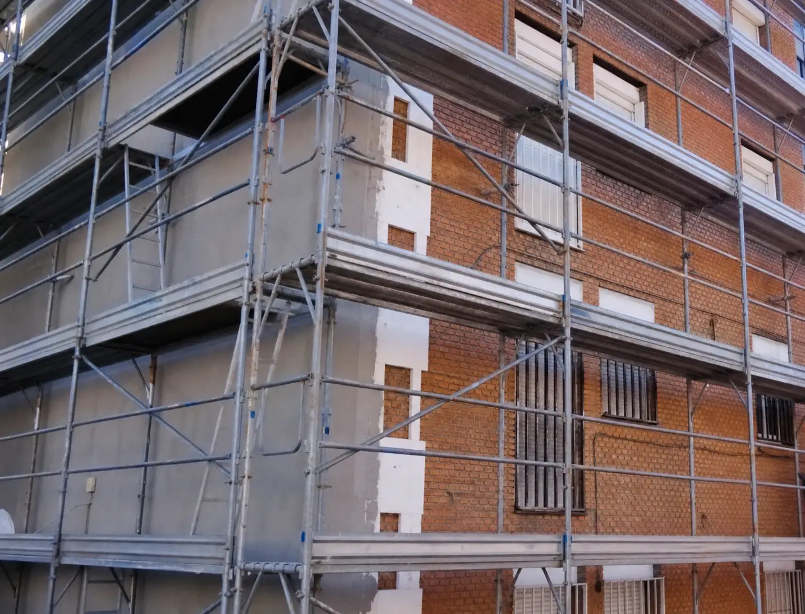

Blog de ReformasB
Reformas, sin humo: precios, ayudas y decisiones bien tomadas
Lo que aprendemos en la obra, contado para que tomes mejores decisiones: cuánto cuestan las cosas de verdad, qué ayudas existen este año y qué reformas compensan (y cuáles no). Por el equipo de ReformasB, reformas y construcción en Lleida desde 2004.

Aislamiento térmico SATE: la reforma estrella de 2026 para ahorrar hasta un 40 % en energía
Qué es el SATE, cuánto ahorra de verdad, precios por m² y las ayudas y deducciones que pueden cubrir gran parte de la obra este año.
Leer artículo →
¿Cuánto cuesta reformar un piso en 2026? Precios reales por metro cuadrado
La horquilla real por m², las partidas que se comen el presupuesto y cómo comparar presupuestos sin llevarte sustos.
Leer artículo →Las reformas que más revalorizan tu vivienda en 2026 (con cifras reales)
Cocina, baño, pintura y letra energética: qué devuelve cada euro invertido cuando vendes o alquilas — y qué no.
Leer artículo →
Reformar en verano: 7 ventajas de hacer obras en los meses de calor
Secados más rápidos, más horas de luz, la casa vacía en vacaciones y todo listo en septiembre. Cómo aprovecharlo bien.
Leer artículo →
Aerotermia y suelo radiante: la reforma que planta cara a las olas de calor
Frío en verano, calor en invierno y hasta un 70 % menos de consumo: cuánto cuesta en 2026 y por qué conviene hacerlo durante la reforma.
Leer artículo →¿Tienes una reforma en mente?
Cuéntanosla. Visita previa gratuita en Lleida y comarcas, diagnóstico honesto y presupuesto por partidas sin compromiso.